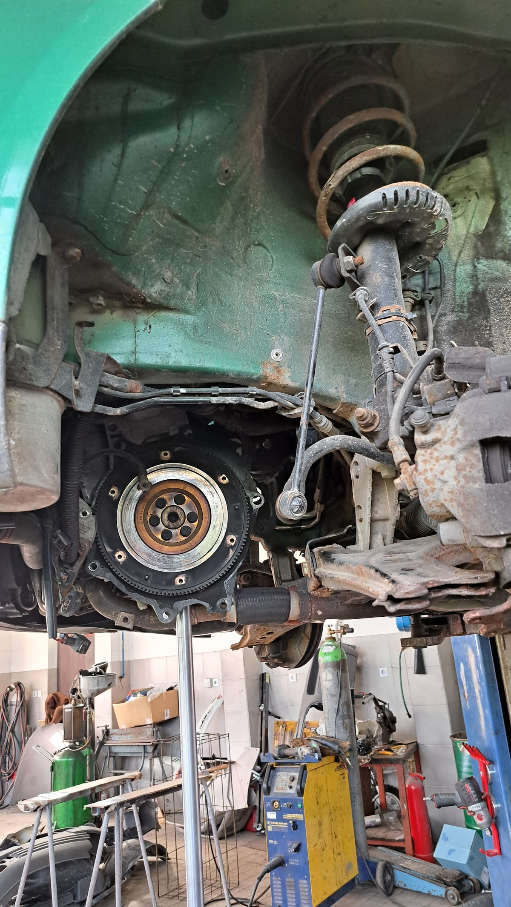
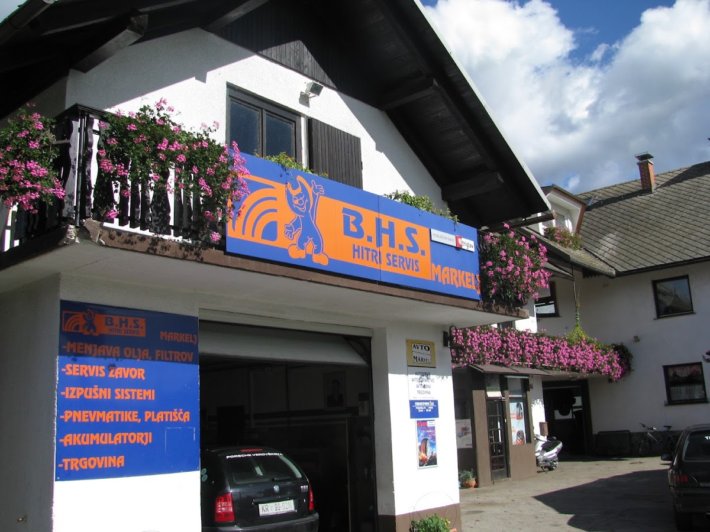
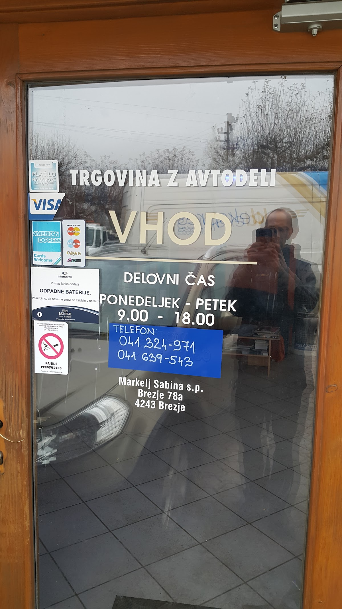
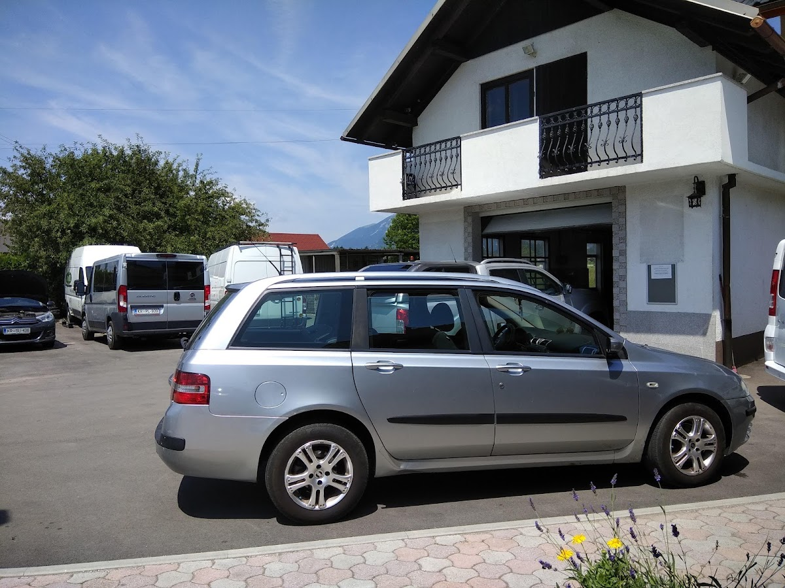
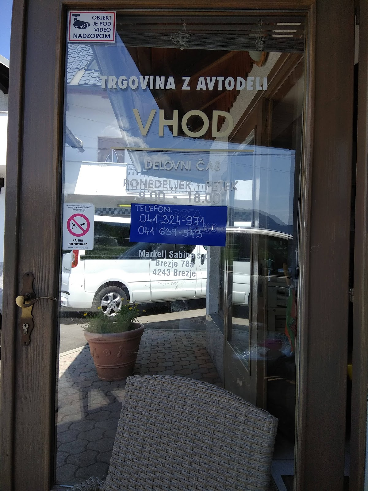
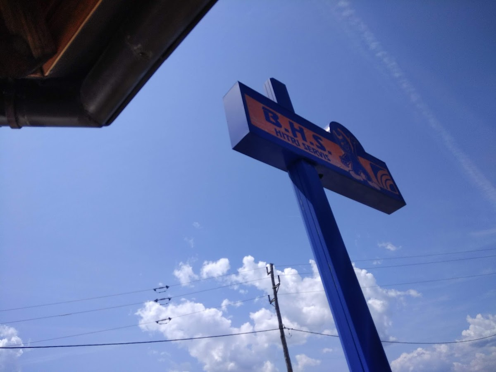
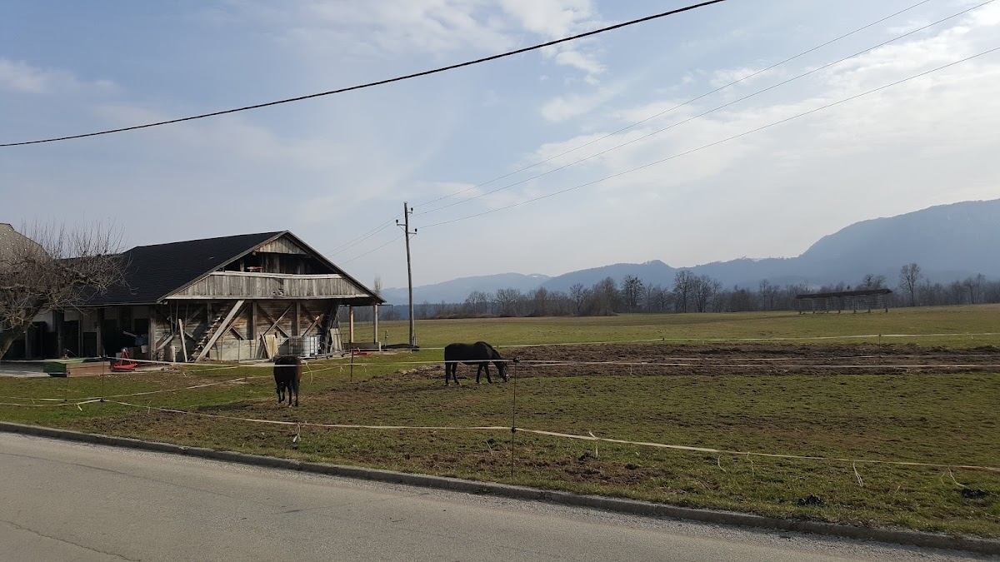
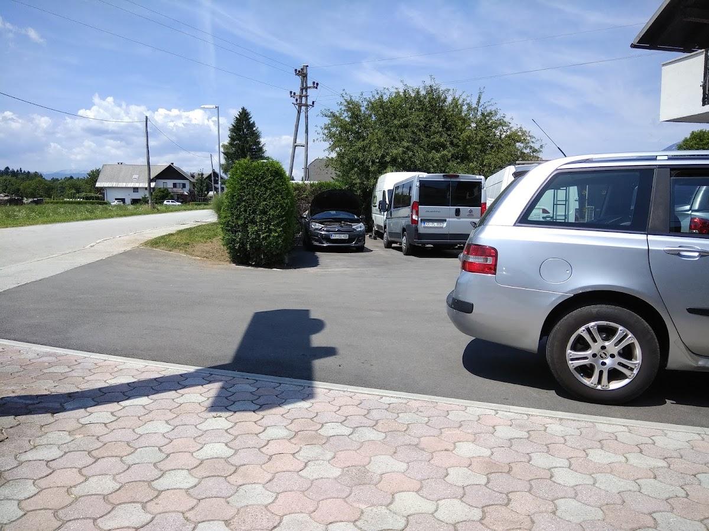

Vleka vozil
V primeru okvare ali nesreče nudimo hitro pomoč z vleko vašega vozila, po izkušnjah strank tudi v nujnih primerih.

Brezje pri Bledu
Vaš avtoservis v Brezjah pri Bledu
Zanesljiv servis in pomoč na cesti, kot so izkusile številne stranke.
O nas
Avto Markelj avtoservis in trgovina Sabina Markelj s.p. se nahaja v Brezjah. Stranke nas opisujejo kot prijazne in odzivne, še posebej v nujnih primerih. Ponujamo storitve vleke, servisiranja in nadomestna vozila. Naš cilj je korekten odnos in dobra izkušnja za vsakega obiskovalca. Delovni čas je od ponedeljka do petka med 9. in 17. uro.

Storitve

V primeru okvare ali nesreče nudimo hitro pomoč z vleko vašega vozila, po izkušnjah strank tudi v nujnih primerih.

Če vaše vozilo potrebuje daljši servis, lahko poskrbimo za nadomestno vozilo, kar olajša vašo mobilnost.

Stranke cenijo našo pripravljenost pomagati, tudi ko so na poti in potrebujejo hitro rešitev.
Naš pristop
Nudimo servisiranje, vleko in nadomestna vozila. Pri nas lahko pričakujete korekten in prijazen odnos. Stranke poudarjajo, da se trudimo najti hitro rešitev in da je izkušnja podobna obisku pri domačem mehaniku.


Kontakt
Za vsa vprašanja ali nujno pomoč nas lahko pokličete. Z veseljem prisluhnemo in poiščemo ustrezno rešitev za vaše vozilo.
Kje smo
Nahajamo se v Brezjah, na naslovu Brezje 78a. Okolica je mirna in dostopna, v bližini Blejskega območja. Lokacija omogoča hiter dostop za domačine in obiskovalce, ki potujejo skozi Gorenjsko.
Brezje 78a, 4243 Brezje, Slovenia
041 324 971